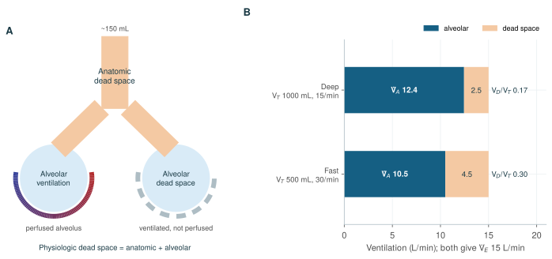
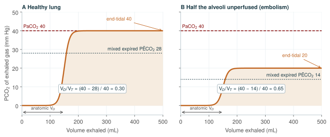
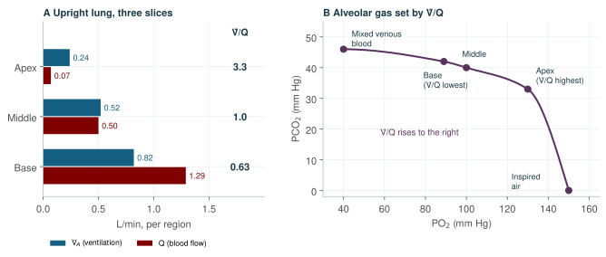
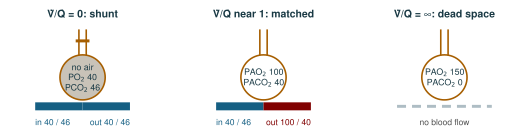
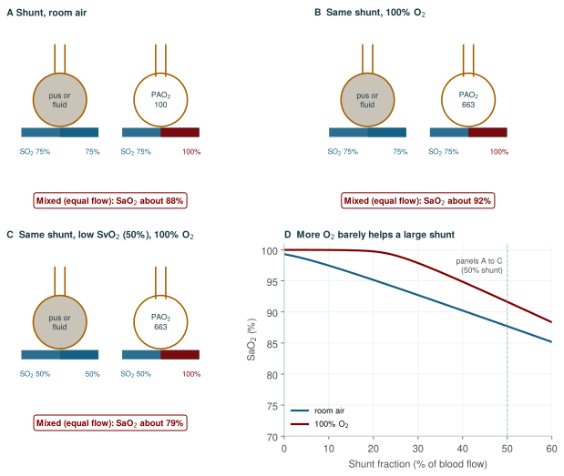
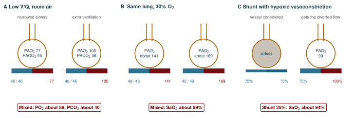
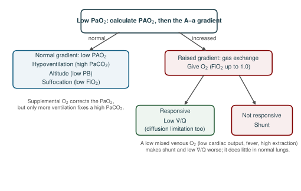

27 Ventilation and Perfusion
Matching air to blood, and what happens when they don’t match
- Separate anatomic, alveolar and physiologic dead space, and explain how the Fowler and Bohr methods measure them.
- Explain why ventilation and blood flow are both greater at the base of the upright lung, why V/Q is lowest there, and what zone 1 means for gas exchange.
- Use the alveolar gas equation and the A–a gradient to sort hypoxemia into a low PAO2 and a gas-exchange problem.
- Use the two-alveolus model to explain shunt and low V/Q, and why one responds to supplemental O2 and the other does not.
- Explain how hypoxic pulmonary vasoconstriction and a low mixed venous saturation change the PaO2 when there is shunt.
- Calculate O2 delivery and say how it differs from O2 content.
- Work through the approach to hypoxemia.
Names, dates and the exact values in figure captions are context, not things to memorize.
The heart and lungs work as one system: they bring O2 to the tissues and carry CO2 away and out of the body. Doing that takes two flows. Ventilation is the convective movement of air that exchanges gas between the atmosphere and the alveoli. Perfusion is the convective movement of blood that carries dissolved gases to and from the lung. Gas exchange works only where the two meet in the right proportion. Earlier chapters covered each piece on its own (Alveolar Ventilation, Diffusion, Transport of O2 and CO2), and the CV block covered the pulmonary circulation (Pulmonary Circulation). This chapter puts them together, first in the normal lung and then in disease, where a mismatch between air and blood is the most common reason a patient is hypoxemic.
27.1 Ventilation, dead space and alveolar ventilation
A quick review of the numbers from Alveolar Ventilation:
| Quantity | Per breath | Per minute (at 15/min) |
|---|---|---|
| Tidal volume, VT, and minute ventilation, V̇E | 500 mL | 7.5 L/min |
| Anatomic dead space, VD, and dead space ventilation, V̇D | 150 mL | 2.25 L/min |
| Fresh gas reaching the alveoli, and alveolar ventilation, V̇A | 350 mL | 5.25 L/min |
The 350 mL of fresh gas mixes into the 2 to 3 L already in the lung at FRC. The muscles do the work of moving all of V̇E, but only V̇A takes part in gas exchange, and it is close to pulmonary blood flow, about 5 L/min. Dead space is ventilated but does no gas exchange (the trachea has a blood supply, but no gas crosses its wall).
27.1.1 Fast or deep
The lecture reviews why, for the same V̇E, deep breaths give more alveolar ventilation than fast, shallow ones: the dead space is a smaller fraction of each breath (Figure 27.1 B; the arithmetic is in Alveolar Ventilation). In a sick patient whose muscles are tiring, rapid, shallow breathing is a recipe for respiratory failure: much of the work goes into moving air in and out of the dead space.

27.1.2 Anatomic, alveolar and physiologic dead space
In a healthy person almost all dead space is anatomic: the conducting airways from the nose and mouth to the terminal bronchioles. In disease, alveoli that still get air can lose their blood flow. Air moved into them does no gas exchange, so they add alveolar dead space. The two together are the physiologic dead space. The classic example is a pulmonary embolism: a clot blocks a pulmonary artery, and the alveoli it supplied are ventilated but not perfused.
Fowler’s method measures the anatomic dead space. The subject takes a single breath of 100% O2 and then breathes out through a nitrogen meter. The O2 that filled the conducting airways comes out first and has no nitrogen. Once alveolar gas, still carrying nitrogen from earlier room-air breaths, starts to arrive, nitrogen rises. The volume exhaled before the rise is the anatomic dead space. It is a laboratory method, not a bedside one, and you need the concept, not the tracing.
Bohr’s method measures the physiologic dead space, anatomic plus alveolar, and uses a gas that matters to physiology: CO2. Inspired air has essentially no CO2. Only perfused alveoli add CO2 to the gas, and their PCO2 is close to PaCO2. Gas from the conducting airways and from unperfused alveoli comes out with no CO2 and dilutes the rest. So the more dead space, the lower the PCO2 of the whole exhaled breath. Any CO2-free inspired gas works, and room air is the usual one; the method does not need 100% O2. The Bohr equation:
\[\frac{V_D}{V_T} = \frac{P_{aCO_2} - P_{\bar{E}CO_2}}{P_{aCO_2}}\]
PĒCO2 is the mixed expired PCO2, the average PCO2 of all the gas exhaled in a breath, measured by collecting the gas. PaCO2 from a blood gas stands in for alveolar PCO2. With a PaCO2 of 40 and a PĒCO2 of 28:
\[\frac{V_D}{V_T} = \frac{40 - 28}{40} = 0.3\]
Normal is 20 to 35% of each tidal breath. In a healthy person there is so little alveolar dead space that the Fowler and Bohr methods give nearly the same number.

At the bedside, a capnograph measures end-tidal PCO2 (PETCO2): the PCO2 of the last gas out, which comes from the alveoli. In a healthy lung it is a few mm Hg below PaCO2, about 35 to 38 when PaCO2 is 40. When part of the lung loses its blood flow, the alveolar gas is diluted and end-tidal PCO2 falls well below PaCO2 (Figure 27.2 B). That gap is the bedside sign of alveolar dead space. A patient on a ventilator whose end-tidal PCO2 falls from about 38 to 20 while PaCO2 rises has added alveolar dead space, and an embolism is a classic cause.
The slide 12 notes say mixed expired PCO2 can be measured by capnography, and in the recording end-tidal PCO2 goes into the Bohr equation with a normal value of “28, 30 or so”. The 28 on slide 13 is the mixed expired value, which the Bohr equation uses. A bedside capnograph shows end-tidal PCO2, normally close to PaCO2; the arterial to end-tidal gap estimates alveolar dead space, not total VD/VT. The slide 10 figure (and the recording) label the breath 100% O2. Any CO2-free gas works, including room air, as the slide 10 notes say.
You can often spot extra dead space without a calculation. Sitting in class you breathe about 12 times a minute at half a liter and hold your PaCO2 at 40. A patient taking big breaths 35 times a minute with a PaCO2 of 40 is doing a great deal of breathing for very little CO2 clearance; unless he is making far more CO2, his dead space is up. The extra work is one way dead space leads to respiratory failure (Pulmonary Acid Base).
27.1.3 CO2 and alveolar ventilation
With CO2 production steady at about 200 mL/min, PACO2 ∝ V̇CO2/V̇A: halve alveolar ventilation and PaCO2 doubles, double it and PaCO2 halves (Alveolar Ventilation). A patient breathing fast and hard with a normal or high PaCO2 has a low alveolar ventilation, whatever the V̇E.
27.2 The V/Q ratio
Picture the ideal lung as a single alveolus with a single capillary. Mixed venous blood arrives, equilibrates with alveolar gas, and leaves with the alveolar PO2 and PCO2. For that to work, the air brought to the alveolus has to match the blood carried past it. The ventilation-perfusion ratio is:
\[\dot V / \dot Q = \frac{\text{alveolar ventilation (L/min)}}{\text{pulmonary blood flow (L/min)}}\]
For the whole lung it is about 0.8 to 1. A V̇A of 4 to 5.25 L/min over a cardiac output of 5 to 6 L/min gives anything from about 0.7 to 1.05. Real lungs have millions of units, each with its own ratio, and in health they cluster around that average.
The V/Q lecture’s slides use 0.8 (slide 28), and the Ventilation lecture uses about 1. Both come from the same arithmetic with different inputs (4.2 L/min over 5 gives 0.84; 5.25 over 5 gives 1.05). What matters is the direction: apex high, base low, and disease pushing units toward 0 or infinity.
27.2.1 Ventilation is greater at the base
In an upright person, pleural pressure is more negative at the apex (about −10 cm H2O) than at the base (about −2.5). The weight of the lung hangs from the top, like a Slinky held by its top coil: the upper coils are stretched and the lower ones bunched. So at FRC the apical alveoli are already well inflated and the basal ones are small.
Ventilation is about the change in volume during a breath, not the volume. The small basal alveoli sit on the steep part of the lung’s pressure-volume curve, and the stretched apical alveoli sit near the flat top (Respiratory Statics). The same fall in pleural pressure during inspiration therefore adds more volume at the base. Ventilation per unit of lung falls steadily from base to apex.
27.2.2 Blood flow is greater at the base, by more
The pulmonary circulation is low pressure, low resistance and highly compliant, and its capillaries are recruited and distended as flow rises (Pulmonary Circulation). Because its pressures are low, gravity has a large effect on them: arterial pressure is higher at the base, where the column of blood above adds to it, and lower at the apex. Blood flow therefore falls from base to apex too, and it falls more steeply than ventilation.
So V/Q rises from base to apex (Figure 27.3). At the base, both are high but blood flow is higher, and V/Q is about 0.6. Near the middle they are about equal. At the apex both are low, but blood flow is much lower, and V/Q is about 3.

A unit’s V/Q sets its alveolar gas. At the high-V/Q apex, PAO2 is about 130 mm Hg and PACO2 about 33. At the low-V/Q base, PAO2 is about 90 and PACO2 about 42. The base has the lowest PAO2 and highest PACO2 of the upright lung, even though it gets the most air, and because it also gets most of the blood, its gas counts most toward the arterial blood.
27.2.3 The West zones and gas exchange
The West zones, defined by the order of alveolar pressure (Palv) and the pressures in the pulmonary arteries (Pa) and veins (Pv), are taught in the CV block; see the West zones figure. What they add to V/Q is this. In zone 1 (Palv > Pa > Pv) the capillaries are closed, so a zone 1 region is ventilated but not perfused: alveolar dead space. Healthy lungs have little or none, matching the point that healthy people have almost no alveolar dead space. Zone 1 appears when vascular pressures fall (acute hypovolemia, such as bleeding) or alveolar pressures rise (air trapping in asthma, or high ventilator pressures). Most matched gas exchange happens in zone 3, where the capillaries stay open. The zones move with position: lying on the back, the posterior, dependent lung gets the most blood flow, because gravity sends more blood to whatever part of the lung is lowest.
The Costanzo figure on slide 28 labels the apex point “Zone 1, V/Q highest”, the middle “Zone 2” and the base “Zone 3”. Read these as apex, middle and base. In the West zones (slide 27), zone 1 has no blood flow, so its V/Q is infinite, and the normal upright lung has little of it. The apex has the highest finite V/Q of the normal lung, about 3, with the highest PAO2 and lowest PACO2.
27.3 Oxygen: from air to tissue
What matters for life is how much O2 reaches the tissues, the O2 delivery: cardiac output times arterial O2 content. At rest the tissues extract about 25%, so mixed venous blood returns about 75% saturated. Getting O2 from air into the alveoli takes three steps.
- Ambient air. PO2 = PB × FiO2, with FiO2 0.21 for room air.
- Inspired air. The upper airway humidifies the air completely, even cold, dry air in fast breathing. Water vapor at body temperature takes 47 mm Hg, so PIO2 = (PB − 47) × FiO2.
- Alveolar gas. CO2 arriving from the blood takes its share:
\[P_{AO_2} = (P_B - P_{H_2O})\,F_{IO_2} - \frac{P_{aCO_2}}{R}\]
R is the respiratory exchange ratio, the CO2 the body puts out divided by the O2 it takes up, about 0.8 on a typical Western diet. At sea level, (760 − 47) × 0.21 = 150, and 150 − 40/0.8 = 100 mm Hg. In Chicago, with PB 747, PAO2 is about 97.
The case slides write PAO2 = 0.21 (700 mm Hg) − PaCO2/R. The 700 is already PB − PH2O (747 − 47), so do not subtract 47 again. The V/Q notes do, which is where their ranges (“31–40”, “236–255”, “96–106”) come from; the slide values below are right.
27.4 Case 1: a comatose patient
A comatose young woman arrives in the emergency department. Her saturation is 75%. Her blood gas on room air is 7.08 / 85 / 42 / 75%: an acute respiratory acidosis and a low PaO2. Did she aspirate and get a pneumonia? The alveolar gas equation answers without an X-ray:
\[P_{AO_2} = 0.21\,(747 - 47) - \frac{85}{0.8} = 147 - 106 \approx 41 \text{ mm Hg}\]
Her PaO2 of 42 matches it. The A–a gradient is essentially zero, so whatever O2 reaches her alveoli is getting into her blood. Her lungs are fine; she is not breathing enough. Her gas is the same as the opioid patient’s in Pulmonary Acid Base, and the lecture treats her as an opioid overdose. Global hypoventilation is enough to cause hypoxemia, and clinicians often miss it: they see a low saturation and assume the lungs are the problem.
A few liters of O2 would raise her saturation but not lower her PaCO2. The fix is to make her breathe. If she goes from 4 to 6 breaths a minute to 10 to 12, alveolar ventilation roughly doubles, PaCO2 halves back toward 40, and PAO2 rises to about 97 with no extra O2.
27.4.1 Causes of a low alveolar PO2
Each term in the alveolar gas equation points to a cause:
- Low PB: high altitude.
- Low FiO2: suffocation, as in a confined space where O2 has been used up or displaced.
- High PaCO2: global hypoventilation.
The history usually makes the first two obvious. In all three the A–a gradient is normal.
27.5 The A–a gradient
The A–a gradient is PAO2, calculated, minus PaO2, measured on a blood gas. In a young adult it is under 10 mm Hg. PAO2 at sea level is about 100, but a healthy PaO2 is more often about 90. About 5% of the cardiac output is a normal anatomic shunt that never meets alveolar gas: bronchial veins draining into the pulmonary veins, and thebesian veins draining the heart muscle into the left ventricle. A little V/Q scatter in the normal lung adds to the gap. Neither raises PaCO2 noticeably. Mixed venous PCO2 (46) is only 6 mm Hg above alveolar PCO2 (40), while mixed venous PO2 (40) is 60 below alveolar PO2. The shapes of the curves matter more. Blood mixes by content, and because the top of the O2 curve is flat, a small loss of O2 content lowers PO2 a lot; the CO2 curve is steep and nearly straight, so the same mixing barely moves PCO2 (see the two-alveolus model below).
The gradient rises with age. The slide 44 notes give an estimate, (age/4) + 4, which comes to about 10 at 24 and about 21 at 68.
Course materials give less than 10 mm Hg (small-group keys, slide 44, the lecture), 5 to 15 (Ventilation notes) and (age/4) + 4 (slide 44 notes). They differ only for gradients between 10 and 15 mm Hg, and none of the course’s cases falls there. This book uses under 10 for a young adult, as the small groups do. In the recording, “anything less than ten is a problem” is a slip for more than ten.
A raised gradient means O2 is reaching the alveoli but not getting into the arterial blood. The causes are:
- Diffusion limitation, where a thickened barrier slows O2 transfer, most of all in exercise (Diffusion).
- V/Q mismatch, mainly units with low V/Q.
- Shunt, blood that passes the lung without meeting ventilated alveoli.
A low mixed venous saturation does not belong on this list by itself. It makes shunt and low V/Q worse, as a later section shows, but it does little in normal lungs.
27.6 The V/Q spectrum
V/Q runs from 0 to infinity (Figure 27.4).

A low V/Q unit is ventilated, but less than its blood flow needs, so blood leaves it with a PO2 below 100 and a PCO2 above 40: blood going where there is not enough O2. A high V/Q unit has more air than its blood can use: gas going where there is no blood to use it. Healthy lungs have little dead space and only the small anatomic shunt. Diseased lungs are a mixture skewed toward one end or the other; as the course notes put it, “we live in the middle”.
27.7 Case 2: pneumonia on 40% O2
A 34-year-old woman has had cough, fever and shortness of breath for four days, and her chest X-ray shows pneumonia. On 40% O2 her blood gas is pH 7.48, PaCO2 30 and PaO2 65 mm Hg: she is hyperventilating. A PaO2 of 65 might not look alarming, but compare it with what her alveoli hold. She is breathing 40% O2 and blowing her CO2 down to 20, so:
\[P_{AO_2} = 0.40 \times 700 - \frac{30}{0.8} = 280 - 37.5 \approx 243 \text{ mm Hg}\]
Her A–a gradient is about 243 − 65 = 178 mm Hg (slide 44 calls it the A-a difference), far above 10. Always ask what the PaO2 should be at the FiO2 the patient is on. On supplemental O2, even a PaO2 of 100 or 150 can hide a very large gradient.
Slides 43 and 44 give the gas as 7.40 / 20 / 65. A pH of 7.40 with a PaCO2 of 20 implies an HCO3− of about 12 mEq/L, a mixed disorder the case does not discuss, and the lecture noted the numbers need fixing. The course errata replace it with 7.48 / 30 / 65, which is used here. The A–a gradient is a little smaller (178 rather than 190 mm Hg), and the conclusion is the same.
27.8 The two-alveolus model
The lecture explains the causes of a raised gradient with two alveoli side by side, each with its own capillary, the blood from both mixing in the pulmonary veins. In the normal model both alveoli have PAO2 about 102 and PACO2 40; mixed venous blood arrives at PO2 40 and PCO2 46 and leaves both units at the alveolar values.
27.8.1 Shunt
Anatomic shunt is blood that bypasses the lung through a channel: the normal bronchial and thebesian veins (about 5%), an abnormal connection inside the heart, or an arteriovenous malformation in the lung. The lecture focuses on physiologic shunt, where blood flows past alveoli that get no air. Either the airway is blocked completely (a tumor, a foreign body, a mucus plug) or the alveoli are filled with something other than air: blood, pus or water. Collapsed alveoli (atelectasis) and the flooded lung of ARDS are shunt too.
Blood that leaves a shunted alveolus is still mixed venous blood. The breathing centers respond to the low PaO2 by driving more ventilation, so the good alveoli get extra air and a higher PAO2, but the blood passing the shunted alveolus never meets it. Mixing gives an arterial saturation below 100% (Figure 27.5 A).
With equal flow through the two units, blood leaves the shunted unit at 75% and the good unit at 100%, and the mixture is about 88%. Averaging saturations works here: when two streams with the same Hb mix, the O2 content of the mixture is the flow-weighted average of the two, and on room air almost all the O2 is bound to Hb. PO2 is the value you cannot average, because the dissociation curve is not straight. Blood at 88% has a PO2 of about 55 mm Hg, not the average of 100 and 40.

27.8.2 Shunt is refractory to O2
Give this patient 100% O2. The good alveolus now has a PAO2 of about (760 − 47) × 1.0 − 40/0.8 = 663 mm Hg. Its blood was already 100% saturated, and Hb cannot carry more than full. The extra PO2 adds only dissolved O2, 0.003 × 663 ≈ 2 mL/dL. The shunted blood never sees the extra O2 and still leaves at 75%. The mixture rises only to about 92% (Figure 27.5 B). Shunt is refractory to supplemental O2, and that failure to respond is how you recognize it.
Slides 49 and 54 average saturations on 100% O2 to get 87.5% and 75% (and write “75 + 100/2” for (75 + 100)/2). The dissolved O2 in the ventilated stream makes the true values about 92% and 79%. Either way the shunt is refractory, which is the slides’ point. The V/Q notes and the Small Group 3 key call averaging saturations “not mathematically correct”; it is close enough on room air, and averaging PO2 is the mistake to avoid.
Figure 27.5 D shows why shunt size matters. The lecture’s slide 52 makes the same point with PaO2: above about a 30% shunt, an FiO2 of 1.0 cannot bring PaO2 to 100.
27.8.3 Case 3: cough and fever, on room air and then 100% O2
A 68-year-old man with cough and fever has a chest X-ray with widespread white opacities. On room air his gas is 7.35 / 33 / 40 / 75%:
\[P_{AO_2} = 0.21 \times 700 - \frac{33}{0.8} \approx 147 - 41 = 106 \text{ mm Hg}\]
His A–a gradient is 106 − 40 = 66. On 100% O2 his saturation rises only to 88%: shunt physiology. It rises more than a pure shunt would, because some alveoli are only partly filled and still take some air, and those low-V/Q units respond to O2.
27.8.4 Hypoxic pulmonary vasoconstriction
The body has its own way to reduce a shunt. Small pulmonary arteries that supply poorly ventilated, hypoxic alveoli constrict. The response is present even in isolated lung tissue; its exact mechanism is still unclear. With cardiac output unchanged, blood that would have gone to the bad region goes to better-ventilated lung, so the shunt fraction falls and PaO2 rises. In the lecture’s example, moving the flow through a shunted unit from half to a quarter raises SaO2 from about 88% to about 94% (Figure 27.6 C).
It helps most when the disease is regional. A patient who suddenly plugs a bronchus with mucus may drop to a saturation of 60 to 70%, with a whited-out lung on X-ray, and over about 15 minutes the saturation climbs back. Suctioning may get the credit, but the repeat X-ray often still shows the whited-out lung; vasoconstriction diverted the blood. When less than about 20% of the lung is affected, total resistance barely changes. When the disease is diffuse, or the whole lung is hypoxic as at altitude, the vessels constrict everywhere, pulmonary vascular resistance can double, and the right ventricle faces an afterload it tolerates poorly.
In a bacterial or other strongly inflammatory lung lesion, the inflammation dilates the local vessels and brings blood to the infected region, so the bad lobe can get more blood flow, not less, and the shunt is worse than its size suggests. This was taught in the 2026 lecture. The Small Group 3 key marks it as not on the exam.
27.8.5 A low mixed venous saturation worsens shunt
The blood that passes a shunt leaves with whatever O2 it arrived with. Mixed venous O2 depends on how much O2 is delivered to the tissues and how much they take out. If cardiac output falls, as in heart failure, or the tissues extract more, as with fever, a high work of breathing or sepsis, mixed venous blood comes back less saturated. In a patient with a shunt, that lower saturation goes straight into the arterial blood. The slides and lecture call this mixing venous admixture (slide 54, “Poor venous saturation/admixture”): poorly saturated venous blood that passes the shunt mixing into the arterial blood. Without any change in the shunt, SaO2 falls further (Figure 27.5 C), and hypoxemia lowers delivery further, a downward spiral.
In normal lungs a low mixed venous saturation does little, because blood that passes well-ventilated alveoli reaches the alveolar PO2 whatever it started at. It matters when there is shunt, low V/Q, or a diffusion-limited barrier, as in exercise.
So with a severe shunt, the levers are to lower the shunt fraction, raise O2 delivery and lower O2 consumption (treating fever, resting the respiratory muscles).
27.8.6 O2 delivery
\[\dot Q_{O_2} = \dot Q \times C_{aO_2} = \dot Q \times \left[(1.39 \times S_{aO_2} \times \text{Hb}) + (0.003 \times P_{aO_2})\right]\]
Each gram of fully saturated Hb carries 1.39 mL of O2, and each mm Hg of PO2 adds 0.003 mL/dL dissolved. With a cardiac output of 5 L/min (50 dL/min), SaO2 1.0, Hb 15 g/dL and PaO2 97:
\[\dot Q_{O_2} = 50 \times \left[(1.39 \times 1.0 \times 15) + (0.003 \times 97)\right] = 50 \times 21 \approx 1050 \text{ mL O}_2/\text{min}\]
O2 content is Hb, saturation and, slightly, PaO2. Cardiac output is not part of content; it multiplies content to give delivery. Raising cardiac output helps a patient with a shunt by raising delivery, which lowers extraction and raises the mixed venous O2.
The slide 54 notes say “oxygen content relies on hemoglobin and cardiac output” and then give the content equation, which has no cardiac output in it. Content depends on Hb and saturation (and slightly on PaO2); delivery is cardiac output times content, as slide 56 shows.
27.9 Case 4: low V/Q in asthma
A 24-year-old man has cough, wheezing, shortness of breath and a subjective fever. His saturation is 85% on room air and 97% on 30% O2. His X-ray shows big lungs with flat diaphragms and not much white. A few liters of O2 fixed his saturation, so this is not shunt.
Air goes preferentially to units whose airways are open, so the units behind narrowed airways get less ventilation for the same blood flow: low V/Q, with a lower PAO2 and a higher PACO2 (Figure 27.6 A). They are still ventilated, so raising FiO2 raises their PAO2 too and their blood saturates (Figure 27.6 B). Low V/Q responds to O2.

The low-V/Q unit in Figure 27.6 A raises its PCO2 to 45, but the extra ventilation of the other unit lowers its PCO2 to 36, and the mix comes back near 40. The same extra ventilation cannot rescue the O2. Blood leaving the well-ventilated unit is already nearly saturated, so a PAO2 of 105 instead of 100 adds almost nothing; the flat top of the O2 dissociation curve leaves nothing to gain. The CO2 curve is nearly straight over this range, so extra ventilation removes extra CO2 in proportion. That is why V/Q mismatch lowers PaO2 much more than it raises PaCO2, and why a high PaCO2 usually means total alveolar ventilation is too low: the patient is tiring, or cannot raise ventilation enough, as in severe COPD.
The V/Q notes say V/Q mismatch spares PaCO2 because CO2 diffuses about 20 times faster than O2. Both gases equilibrate fully in a normal capillary; the reason is the shapes of the two dissociation curves.
Opening the airways improves oxygenation, but the more immediate danger in asthma is the work of moving air through narrowed tubes. Hypoxic vasoconstriction plays a small part in low V/Q; once the patient gets O2, the stimulus goes away.
27.9.1 What disturbs V/Q
Airway problems: asthma, COPD (bronchitis and emphysema), secretions, bronchiectasis, foreign bodies and masses. Alveolar problems: pneumonia, interstitial lung disease and edema. Vascular problems: high or low pressures in the pulmonary circulation. Pneumonia and edema cause low V/Q where the alveoli are partly filled and shunt where they are filled completely. Atelectasis, where the alveoli have collapsed, is shunt.
Slide 59 lists atelectasis with pneumonia, interstitial lung disease and edema as alveolar problems that disturb V/Q, and the lecture presented the list as problems that “don’t totally sock in” the alveoli, that is, low V/Q. Collapsed alveoli get no air, so atelectasis is shunt, as the slide 47 notes say.
27.10 The approach to hypoxemia
Every patient with a low saturation goes through the same steps (Figure 27.7). Calculate PAO2, measure PaO2, and take the A–a gradient. If the gradient is normal, gas exchange works and too little O2 is reaching the alveoli: look for hypoventilation, altitude or a low FiO2. If it is raised, give O2. A good response means low V/Q (or diffusion limitation); keep the O2 on while you treat what is lowering ventilation. A poor response means shunt.

Low V/Q is by far the most common reason a patient is hypoxemic.
For severe shunt the lecture described, as physiology, what ICU teams do: positive end-expiratory pressure (PEEP) holds flooded alveoli open and turns shunt into O2-responsive low V/Q; diuresis removes lung water; turning a patient with ARDS onto the belly evens out ventilation and perfusion; and laying a patient good lung down lets gravity send blood to the ventilated lung.
27.11 Check your understanding
A person pants, with a very high rate and a tidal volume close to the anatomic dead space. The mixed expired PCO2 of the gas collected from his breaths falls toward zero, yet his PaCO2 rises. Explain both changes.
Answer
Each breath first fills and empties the conducting airways, which add no CO2. With VT close to VD, almost all of each exhaled breath is dead space gas, and the little alveolar gas in it is diluted, so the mixed expired PCO2 falls toward zero (in the Bohr equation, VD/VT approaches 1). Meanwhile alveolar ventilation, (VT − VD) × RR, stays small however high the rate goes. CO2 leaves the body only with alveolar ventilation, so removal falls below production and PaCO2 rises.
In an upright person, the base gets the most ventilation. Why does it still have the lowest PAO2?
Answer
Blood flow rises toward the base even more steeply than ventilation, so the base has the lowest V/Q (about 0.6). Each unit of blood there is matched with less fresh air, so more O2 is taken out of the alveolar gas and more CO2 added to it, and PAO2 ends up lowest and PACO2 highest.
Breathing 100% O2 raises a healthy person’s PaO2 from about 100 to about 600 mm Hg. With a hemoglobin of 15 g/dL, roughly how much does CaO2 rise, and why so little for a sixfold rise in PaO2?
Answer
About 2 mL/dL, from about 20.5 to about 22.6 mL/dL, roughly 10%. Hemoglobin is already about 97% saturated at a PaO2 of 100, on the flat top of the curve, so the bound term can rise only to 100%: about 1.39 × 15 × 0.03 ≈ 0.6 mL/dL more. The rest is dissolved O2, 0.003 × 500 = 1.5 mL/dL. Almost all the O2 in blood rides on hemoglobin, and once hemoglobin is full, extra PO2 adds only the small dissolved amount.
Why does V/Q mismatch lower PaO2 much more than it raises PaCO2?
Answer
The patient breathes more, and the well-ventilated units blow off extra CO2. The CO2 curve is nearly straight, so their lower PCO2 offsets the high PCO2 of the low-V/Q units. Extra ventilation cannot add O2 to blood that is already nearly saturated, because the O2 curve is flat at the top, so nothing offsets the poorly saturated blood from the low-V/Q units.
27.12 Key equations
| Equation | Use |
|---|---|
| V̇E = VT × RR; V̇A = (VT − VD) × RR | Minute and alveolar ventilation |
| VD/VT = (PaCO2 − PĒCO2)/PaCO2 | Bohr equation, with mixed expired PCO2 |
| PACO2 ∝ V̇CO2 / V̇A | CO2 and alveolar ventilation |
| V/Q = V̇A / Q̇ | Ventilation-perfusion ratio |
| PIO2 = (PB − PH2O) FiO2 | Inspired PO2 |
| PAO2 = (PB − PH2O) FiO2 − PaCO2/R | Alveolar gas equation |
| A–a gradient = PAO2 − PaO2 | Is gas exchange working? |
| CaO2 = (1.39 × Hb × SaO2) + (0.003 × PaO2) | O2 content |
| Q̇O2 = Q̇ × CaO2 | O2 delivery |
27.13 Sources
This chapter follows the 2026 Ventilation and Perfusion I and II lectures for MEDC 30504 and draws on the course’s V/Q notes, Small Group 3 and the 2018 course notes, corrected and updated. All figures were drawn for this book.